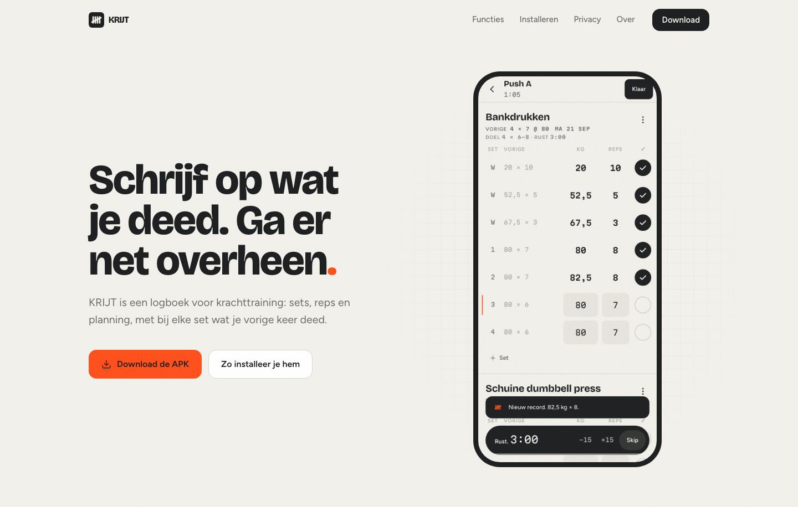
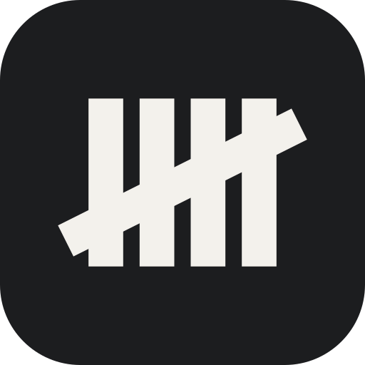
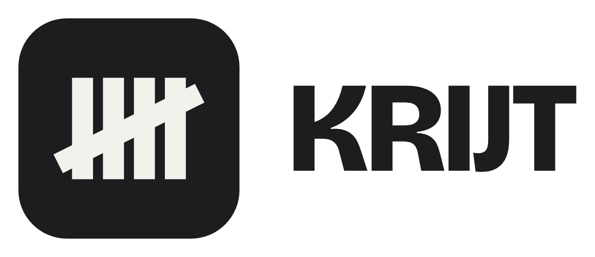
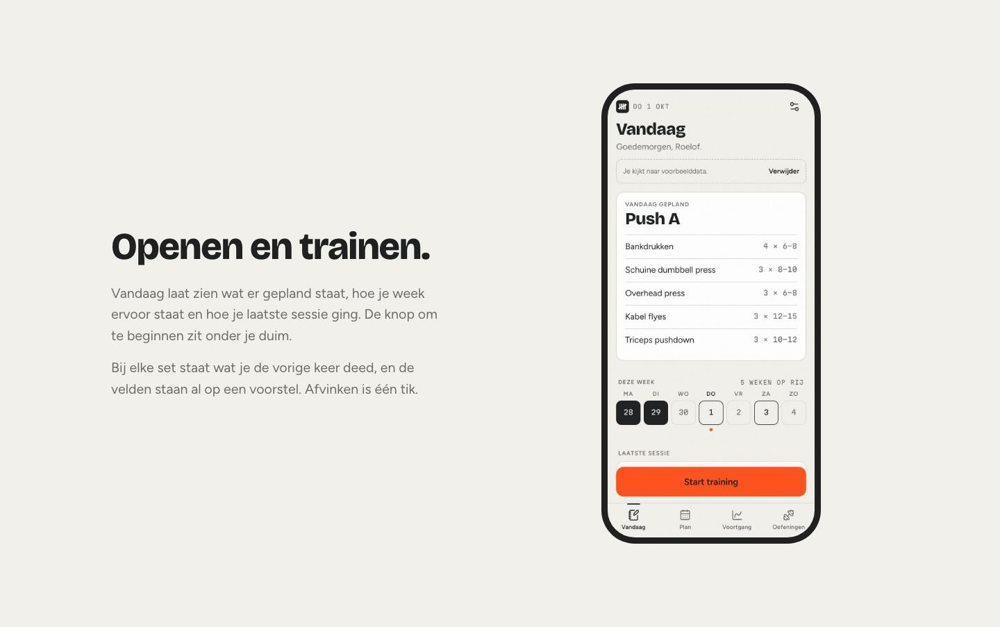
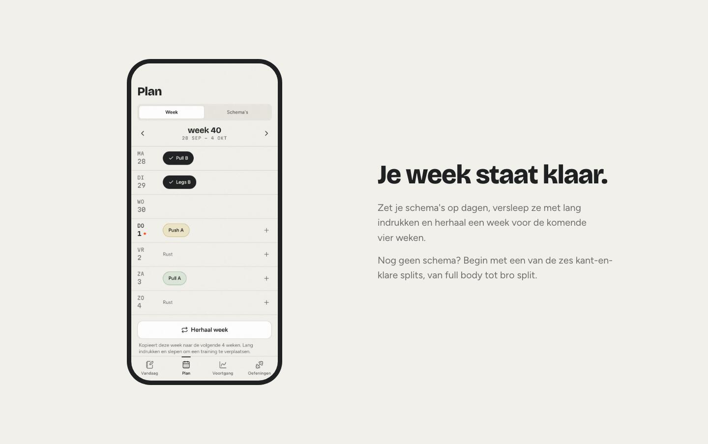
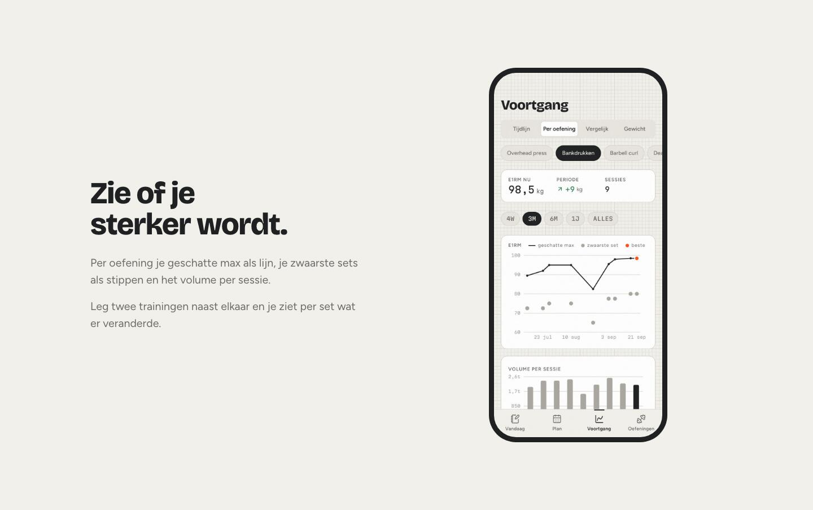
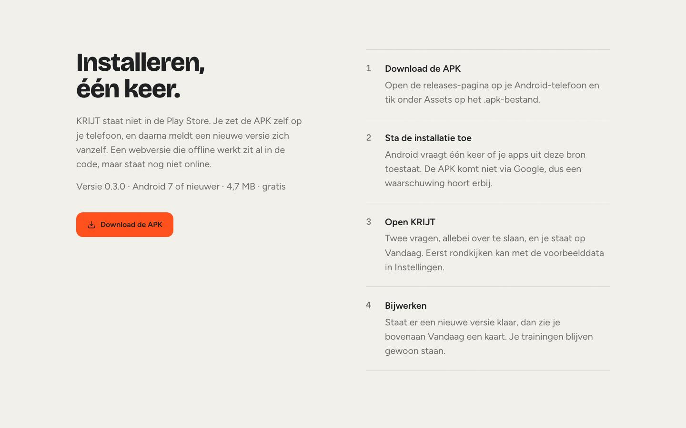

Brand Identity · KRIJT
KRIJT.
KRIJT, altijd in kapitalen: het krijt van het bord in een oude gym, waar je opschrijft wat je deed. Het merk is een industrieel logboek, mat, droog en precies, als een technische tekening op krijtwit papier.

Naam en logo
Een logboek hoort er niet uit te zien als een fitnessapp. Geen halters en geen vlammen: het merk komt van het krijtbord in de gym, waar je met streepjes bijhoudt wat je deed.



Het turfteken
Vier strepen en een vijfde schuin erdoorheen: zo tel je op een krijtbord. Het teken zegt wat de app doet, bijhouden wat je deed, zonder dat er een halter in hoeft.
Uit hetzelfde hout
De streep van het teken is even dik als de stam van de letter in gewicht 800. Daardoor staan beeldmerk en woordmerk als één ding naast elkaar, op 24 pixels net zo goed als groot.
Eén tik
Bij een nieuw record tikt het turfteken één keer in de hoek van de melding, en de vijfde streep tekent zich in 180 milliseconden. Geen confetti.
Palet en typografie
Krijtwit en grafiet doen het werk, en het donkere thema volgt het systeem. Signaaloranje komt op hooguit één of twee plekken per scherm: de actieve set, een record of de knop om te beginnen. Zo blijft het een signaal en geen versiering.
Beeldtaal
Mat en precies, als een technische tekening. Diepte komt van lijnen en niet van schaduw, en over alles ligt een zachte korrel.


De site, van boven naar beneden




De toon
Kort, droog en Nederlands, zoals wat je op een krijtbord schrijft. Een leeg scherm zegt "Nog niks geschreven. Begin een training." en een record "Nieuw record. 82,5 kg × 8." Geen peptalk: de cijfers zeggen genoeg.